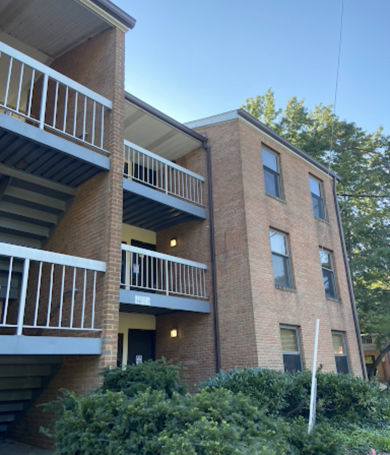
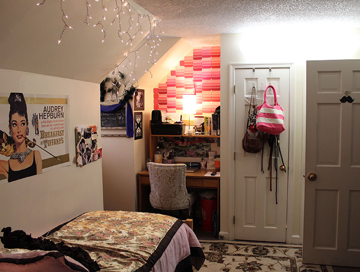
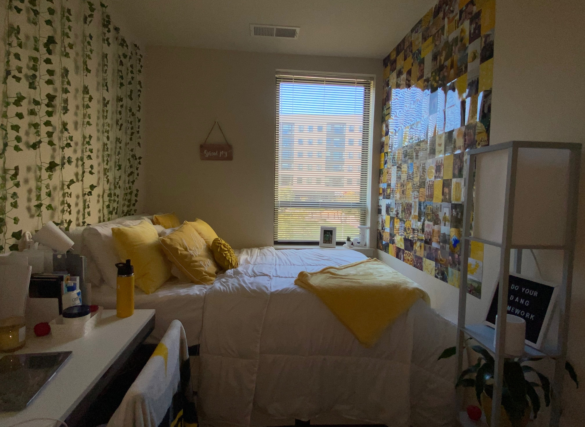
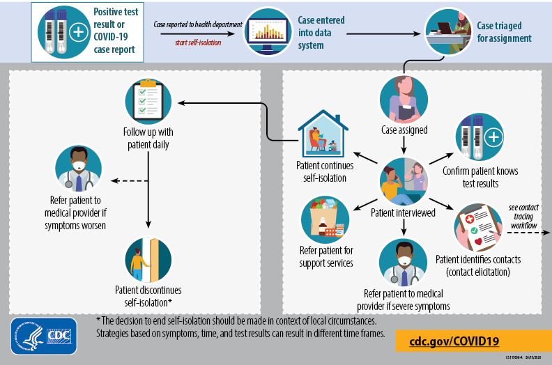

December 3, 2020
When freshman Zoe Nicholson got a positive result from her COVID-19 test, she was shocked. None of her friends at the University of Maryland had been exposed to the novel coronavirus that she knew of, and she could not figure out how she got it.
Nicholson had already had two negative tests administered by the university at the Maryland Stadium, but as soon as she received a positive result three days later, her already unique life as a college freshman in 2020 altered even more.
“The morning I got my results, I called the UMD Health Center and they got some general information about me as a student and about my symptoms,” Nicholson said. “I was moved to the isolation apartment later that afternoon.”
After being transported to Leonardtown from Cumberland Hall, Nicholson started her quarantine in an apartment with three other girls that had also tested positive.
Nicholson’s quarantine lasted one week, but the accommodations were “very nice,” according to Nicholson.
“We each had our own room and shared the bathrooms, living space, and kitchen. The apartment was very clean and they provided cleans towels and linens when I got there,” Nicholson said. “We also had an instruction pamphlet that claried a lot of the questions I had about the housing and our guidelines.”
Even the food, Nicholson said, was better than she expected going into isolation. Every night at 6 p.m., an employee of the university dining services would deliver meals to the front door, and inside would be each person’s meals for that night, as well as breakfast and lunch for the next day.
“They also sent us large cases of bottled water and snacks like granola bars, candy, chips, raman and popcorn,” Nicholson said. “These were all things that I hadn’t seen at the dining hall before, and I was thankful for the employees who put these bags together for us.”
After her isolation was over, Nicholson got another test to ensure she was negative, and returned to her new normal life of Zoom classes. However, the flow of students that tested positive and were forced to quaratine did not end there.
Things have played out differently for Julia Glasgow, a sophomore marketing and finance major suspects she got COVID from a friend that lives in her off-campus apartment building, Terrapin Row.
After Glasgow’s friend, and two of her roommates, tested positive, there was already a high probability that she could have been exposed. However, to make matters worse, the friend’s fourth roommate, who had tested negative multiple times, kept hanging around the apartment.
“My roommates and I got into several fights about this,” Glasgow said. “she could have brought the germs from her apartment to mine, if I hadn’t already contracted it.”
Glasgow took preemptive measures and started to quarantine before receiving her positive results on Nov. 10.
Since Glasgow had her test administered at an urgent care facility, she received a call from the Maryland Department of Health to verify that she was quarantining, followed by a contact tracer to determine who else could have been exposed.
After a couple days of struggling to quarantine in her small living quarters in College Park, Glasgow ventured home to Westminster, Md., to continue to isolate in her room at her parents’ house.
The space may have improved for Glasgow since returning home, with a bigger room and her own bathroom, but the symptoms have not.
“My experience as far as my symptoms has been pretty horrible,” Glasgow said, noting routine temperature and oxygen level checks throughout the day, along with an extended quarantine because she has not been symptom-free for 24 hours.
Even after she finally recovers, Glasgow said, she will not be returning to her apartment in College Park until at least the start of 2021.
“I have to continue to monitor myself for symptoms for the next three months, once I get out of quarantine, because symptoms could come back at any point in that time period.”
As cases continue to spike across the U.S. and a clear timeline for a vaccine approval unknown, some students are preparing to go home and stay for the rest of the semester at the university, while others remain stuck in quarantine housing and dorms.
Gov. Larry Hogan announced a 52% increase in cases per 100,000 Maryland residents on Nov. 12.
Prince George’s County, which reported 1,970 new cases that week, announced new restrictions that are reminiscent of the summer — indoor gatherings are restricted to 10 people, 25 outside, and face coverings at all times, and smaller capacities for places like restaurants and grocery stores.
The U.S. surpassed 200,000 new cases Nov. 27, the first time since the beginning of the pandemic, and reported 2,885 deaths as of Dec. 2.